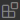
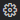
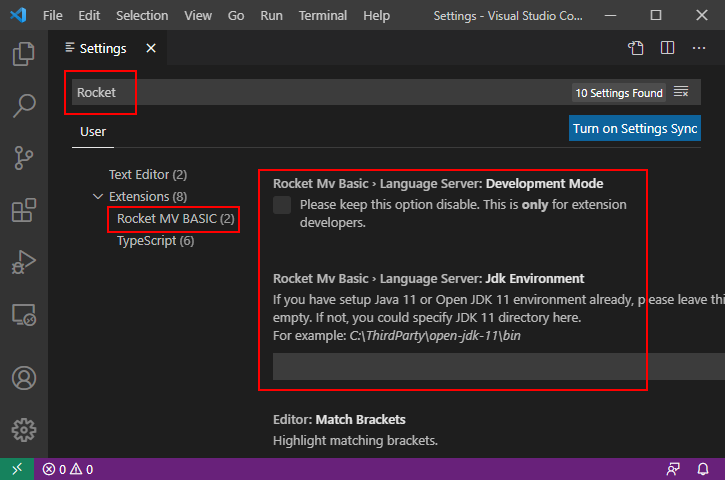

Rocket MV Basic for VS Code
Rocket MV BASIC for VS Code is a free Visual Studio Code extension created by Rocket Software. This extension enables BASIC developers to modernize their MultiValue applications in one of the most popular development platforms with an exceptional editing experience.
Features
This extension allows:
- BASIC statements / keywords highlighting
- Semantic highlighting
- Symbols collection / outline on the current document
- Code folding
- Go to / Peek definition on the current document or crossing different files
- Rename symbols for the same type
- Find symbol references in current document and crossing different files
- Hover over a statement to display its documentation
- Document formatting, range formatting and on typing formatting
- Detail settings for formatting
- Auto-Completion for BASIC statements, keywords, and symbols
- Connect to U2 MultiValue server and cache cataloged programs to local machine when necessary
- Auto-Group files and customize the group rules
- Add customized documentation for functions, subroutines, or labels
- Show syntax and grammar errors
- Prompt parameters of BASIC internal functions
- Compile / Catalog BASIC programs on the U2 server
- Debug BASIC program files
- Remote editing of BASIC program files on a U2 server (preview)
Getting started
Requirements:
Install & configure the extension
-
Install this extension from the VS Code Marketplace.
Step 1: Open Visual Studio Code.
Step 2: Click the Extensions icon  (CTRL + SHIFT + X). This opens the EXTENSIONS panel.
Step 3: Search for Rocket MV Basic.
Step 4: Click Install and wait for the installation to complete.
-
Download, install and setup the Java environment. Note that you can skip Step 1 and Step 2 if you already have Java 11+ (OpenJDK or Oracle JDK) installed.
Step 1: Click Manage  > Extension settings. This opens the Extension Settings window.
Step 2: In the JDK Environment section enter the full path to the JDK bin folder. For example., C:\jdk-20\bin.
Step 3. Open User Settings (use the appropriate option listed below):
On Windows/Linux
-
File > Preferences > Settings
-
Use the keyboard shortcut Ctrl + , to open the setting editor
-
Press F1 or Ctrl + Shift + P to open the Command Palette, and then select
Preferences: Open Settings (UI)
On macOS
-
Code > Preferences > Settings
-
Press F1 or Ctrl + Shift + P on Mac to open Command Palette, and then select
Preferences: Open Settings (UI)
Step 4. Search “Rocket” to locate the Rocket MV BASIC extension and enter the Java bin path as illustrated in the example below.

Note: Using this method, an existing working environment that requires a different version of Java would not be impacted and the extension will work properly in the Java 11 (or above) environment.
-
Open an account folder as a workspace
-
Select "File" > "Open Folder" to open a folder that contains the BASIC program files you want to view or edit. You can also add multiple folders to the workspace using "File" > "Add Folder to Workspace". We recommend that you open the U2 account level folders to avoid encountering exceptions.
Note: This extension is designed to work with folders/directories rather than individual program files. If you open a single file, some functions may be limited.
-
Activate the extension.
- By default, the extension is automatically activated when opening a file with the suffix ".B". If your BASIC program files don’t end with a ".B" suffix, please refer to the FAQ to see how to customize the rules for activating the extension automatically.
-
If the extension is not activated automatically, please open the Command Palette in VS code(use any option listed below), and enter the "Activate Rocket MV BASIC" command to activate it manually.
On Windows/Linux
-
View > Command Palette
-
Press F1 or Ctrl + Shift + P
On macOS
-
View > Command Palette
-
Press F1 or Ctrl + Shift + P
-
Note: Currently, the extension does not provide version control capabilities. Users should manage source code versions independent of this extension.
Usage
Click the links below to learn more about using each feature. You can also refer to the user manual documentation online.
Editing Features
- Auto completion
- Code folding
- Code lens
- Document symbols
- Diagnostics
- Find references
- Formatting
- Go to definition
- Hover
- Rename
- Semantic highlighting
- Signature help
- Online Editing
- File Locking
- Hashed File Editing
Development Environment
Others
Contact Us
Please visit our forum for more information.